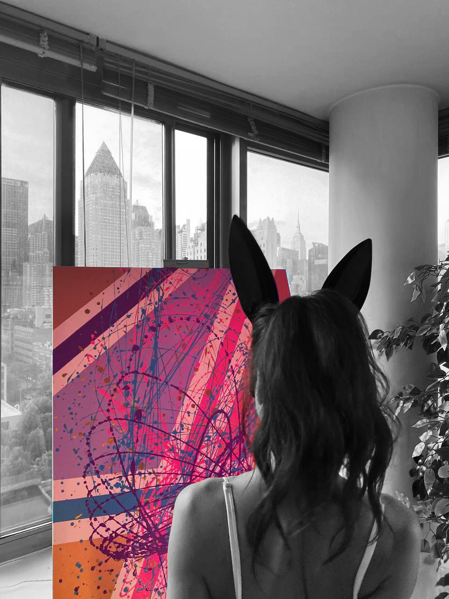

L'Artiste
Paris · New York
Carlay est une artiste émergente française qui évolue dans l'univers de l'art abstrait. Sa technique : l'acrylique sur toile, en couches riches et gestes francs.
« Transformer des moments ordinaires en expériences visuelles extraordinaires. »
Inspirée par les paysages urbains et les scènes du quotidien, elle construit des compositions où des formes organiques fluides traversent des fonds géométriques — violets profonds, teals électriques, roses vifs et ors métalliques.
Active principalement en France et à New York, sa présence croissante sur ces marchés artistiques majeurs témoigne d'une voix singulière dans l'abstraction contemporaine.
Contact
Pour l'acquisition d'une œuvre, tout passe par la boutique — paiement sécurisé, livraison mondiale. Pour toute autre demande :
carlayart369@gmail.com